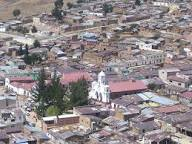
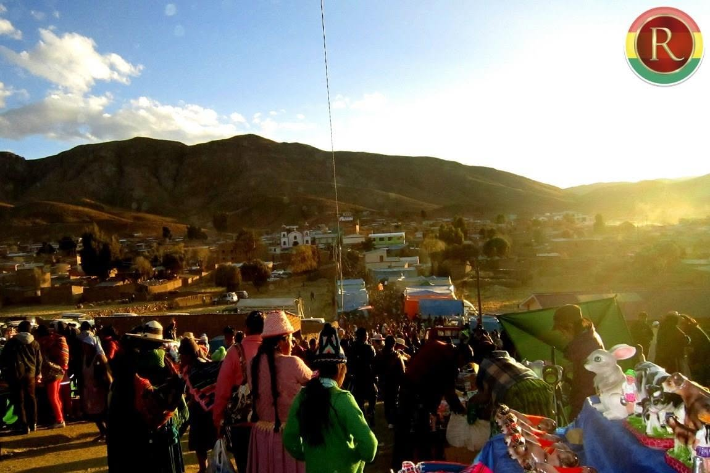
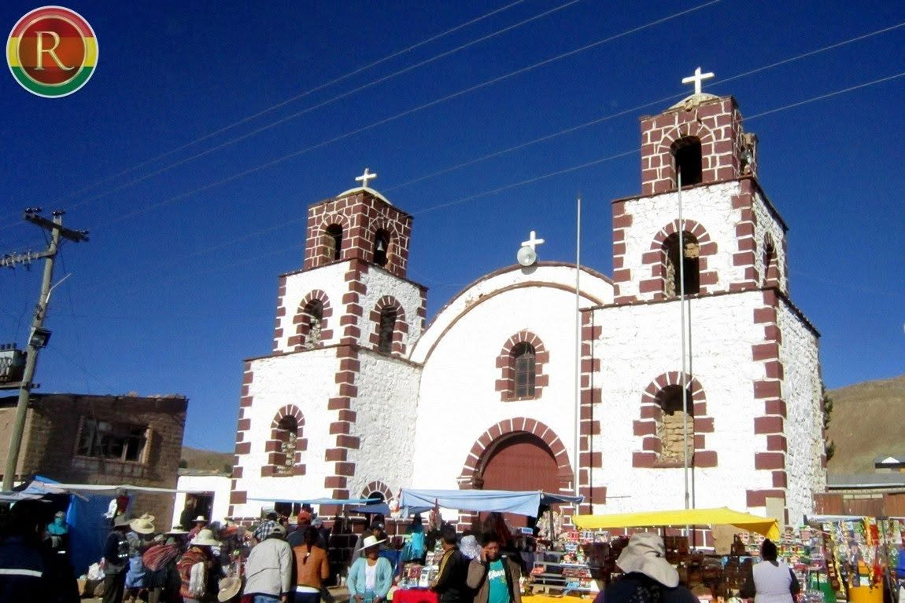

Cala-Cala



×

Ubicación
Cala-Cala, Municipio de Uncía, Provincia Rafael Bustillo, Potosí, Bolivia
Cargando... 0%
La historia se remonta a finales del siglo XIX o principios del XX. Cuenta la tradición que dos pequeños niños pastores de la comunidad de Cala Cala estaban cuidando sus ovejas en el cerro Calvario cuando estalló una terrible tormenta de granizo y relámpagos. Al calmarse el temporal, los niños descubrieron una cruz con la imagen de un Cristo crucificado.
Cala Cala es una comunidad rural ubicada en el municipio de Uncía, dentro de la Provincia Rafael Bustillo en el norte del departamento de Potosí, Bolivia.
- Cala Cala es ampliamente conocida en el Norte de Potosí por ser la sede del tradicional
Festival de Qhonqotas y Pinkilladas (como su festival anual de musica autoctona), donde participan
agrupaciones y comunidades de Potosi, Cochabamba y Oruro para preservar los instrumentos nativos y
danzas ancestrales.
Ver mas
- Sus habitantes conservan costumbres agricolas, tejidos tradicionales y expresiones musicales
comunitarias vinculadas al ciclo agrícola y festivo de los ayllus de la región.
La comunidad de Cala Cala celebra con gran fervor la fiesta patronal en honor a San Antonio, combinando la fe católica con rituales y danzas ancestrales que reafirman la identidad de los habitantes de la región.
una obra social icónica dedicada a brindar apoyo alimenticio, educación integral y carnetización a niños, niñas y adolescentes con discapacidad en la región. El centro toma su nombre en honor a San Benito Menni, un santo conocido por su dedicación a los enfermos y desamparados.
Con la fragmentación eclesiástica y civil en el Norte de Potosí, las comunidades originarias adoptaron a la Virgen de la Candelaria como su santa patrona, adaptando su fiesta (el 2 de febrero) al calendario agrícola andino.



Cala-Cala, Municipio de Uncía, Provincia Rafael Bustillo, Potosí, Bolivia